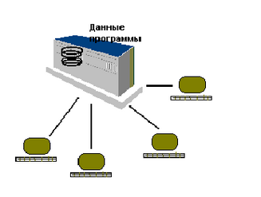

DRKB Explorer
Архитектура «Хост-терминала»
01.01.2010
Архитектура “Хост-терминал”
Другой вариант архитектуры, тоже очень популярной в свое время для построения информационных систем, называется терминальной, или архитектурой “хост-терминал”. В отличии от архитектуры файлового сервера, где вся обработка перенесена как можно ближе к пользователю, а общими являются только данные, терминальная архитектура на рабочем месте пользователя (на терминале) производит только физическое отображение и ввод информации, а вся логика приложения, все данные хранятся на центральном компьютере (хосте). Такая архитектура соответствовала идее больших компьютеров (мэйнфреймов) и была особенно популярна в 70-х и начале 80-х годов. На центральном компьютере работает общее, единое для всех пользователей приложение. Это приложение работает со своими данными. Каждый из пользователей подключается к информационной системе черех систему удаленного терминального доступа (телемонитор). На рабочем месте пользователя производится прием нажатых клавиш, их пересылка на компьютер, получение и отработка команд на вывод информации. Так как операционные системы, работающие на таких компьютерах, также как и системы программирования и сами компьютеры были изначально разработаны для многопользовательского доступа, неразрешимых проблем с одновременной работой нескольких пользователей не возникало. Не возникало также и особых проблем с пропускной способностью линий связи, так как передавалась только та информация, которую мог воспринять и ввести пользователь. Рис. 1.2. Многопользовательская информационная система на основе мейнфрейма и терминальной архитектуры.Однако администрирование и сопровождение терминальных информационных систем было очень дорогим, что стало особенно заметно в сравнении с недорогими персональными компьютерами. Кроме того, терминальные системы, как правило, обеспечивали только достаточно примитивный, алфавитно-цифровой, могохромный интерфейс. Для некоторых задач этого было недостаточно. Существенной проблемой стала и масштабируемость терминальных систем. Увеличение числа пользователей в какой-то момент приводило к необходимости очень существенных финансовых вложений, связанных с модернизацией аппартного комплекса в целом.
Грачев А.Ю. Введение в СУБД Informix